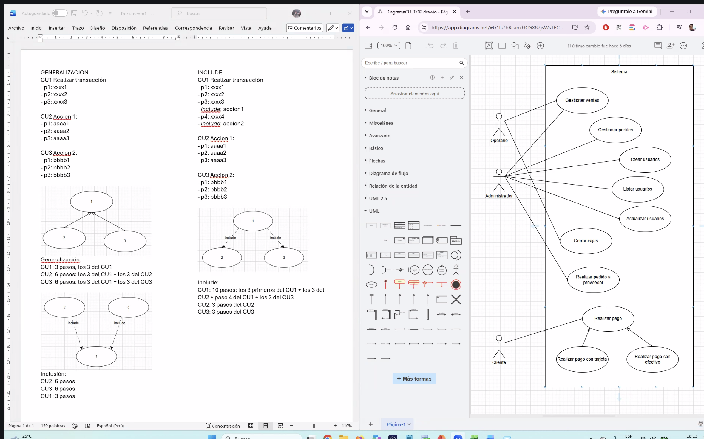

El diagrama muestra el mapa; la especificación escribe el viaje: quién entra, qué pide y qué ocurre si algo falla.
Pulsa Escape o haz clic fuera de la imagen para cerrar.
Clase 7 · Análisis y Diseño de Sistemas Avanzado
El diagrama muestra el mapa; la especificación escribe el viaje: quién entra, qué pide y qué ocurre si algo falla.
6 campos: qué logra el actor, sin detalle técnico.
9 bloques: flujos, reglas de negocio y RNF verificables.
La norma aporta el método; UML aporta el dibujo.
Cada caso enlaza a sus requisitos (R1–Rn).
6 campos en lenguaje de negocio. Valida alcance con no técnicos.
9 bloques: alternos, errores, reglas de negocio y RNF.
Fichas + diagrama + glosario + trazabilidad según ISO 29148.
Alto valida alcance → detallado dirige obra → documento unifica
Sinopsis del sistema: decide alcance sin atarlo a pantallas ni APIs.
Contrato técnico: cero decisiones al azar para devs y testers.
| ISO 29148 | Método: estructura, trazabilidad y cambios. |
|---|---|
| UML | Dibujo: actores, casos y relaciones. |
| Juntos | Fichas sueltas → documento auditable. |
La captura de trabajo compara dos formas de reutilizar pasos. La generalización permite que un caso especializado herede el comportamiento común del caso general. «Include» incorpora un comportamiento obligatorio que el caso base siempre ejecuta.
| Relación | Pasos del ejemplo | Lectura |
|---|---|---|
| Generalización | CU1: 3; CU2 y CU3: 6 cada uno. | Cada caso especializado conserva los 3 pasos comunes y agrega sus 3 pasos propios. |
| «Include» | CU1: 10 combinados; CU2 y CU3: 3 cada uno. | CU1 incorpora los pasos reutilizables de CU2 y CU3, además de su propio flujo. |
El diagrama de bodega muestra actores y funciones como gestionar ventas, administrar usuarios y realizar pagos. El pago con tarjeta y en efectivo ilustra variantes que se documentan aclarando pasos comunes y específicos.

Criterio práctico: generaliza objetivos especializados que comparten comportamiento; usa «include» para un comportamiento obligatorio y reutilizable.
Diagrama → alcance → precisión → documento único y auditable.
Realizar compra en línea: en alto nivel son 4 pasos (navegar → seleccionar → carrito → pagar). En detallado son 7 pasos verificables con alternos (cambiar dirección), errores (sin stock, pago fallido) y RNF (≤ 2 s, PCI).
Qué recordar
Frase clave: "El diagrama muestra el mapa; la especificación escribe el viaje: quién entra, qué pide y qué ocurre si algo falla."
+Temas complementarios del apunte
Matriz de trazabilidad entre requerimientos, requisitos funcionales y casos de uso con sus actores
La especificación de alto nivel responde al "qué" del sistema y deja fuera el "cómo". Describe la interacción normal entre actor y sistema en pocas líneas. Su valor aparece en etapas tempranas, cuando el alcance aún se negocia. Analogía simple: es la sinopsis de una película. Indica de qué trata y cómo termina, sin contar escena por escena. Alcanza para decidir si el proyecto interesa. Característica ·…
Cada ficha de alto nivel usa la misma plantilla de seis campos. La plantilla evita que cada analista invente su propio formato. La consistencia permite comparar casos de uso entre sí. Componente · Qué contiene · Ejemplo ("Realizar compra en línea") Título · Nombre corto y único del caso de uso · Realizar compra en línea Actor principal · Quién interactúa con el sistema para lograr el objetivo · Cliente…
La especificación de alto nivel rinde en contextos de cambio rápido o audiencia mixta. Permite iterar sin reescribir documentos largos. Ahorra tiempo al evitar malentendidos tardíos. Escenario · Por qué conviene el nivel alto · Ejemplo peruano Fase inicial del proyecto · Fija entendimiento común sobre requisitos y alcance · App de bodega: definir "vender", "cobrar", "reponer" antes de codificar Comunicación con…
La especificación detallada cubre el "qué" y el "cómo". Incluye detalles técnicos, flujos alternativos, reglas de negocio y condiciones de error. Su costo es tiempo: crearla y mantenerla exige esfuerzo sostenido. Analogía simple: es el guion técnico de la película. Indica cada escena, cada diálogo y cada plano. El equipo de filmación trabaja sin improvisar. Característica · Descripción · Ejemplo real Enfoque en…
La ficha detallada extiende la de alto nivel con cuatro bloques nuevos. Actores secundarios, flujos alternativos, reglas de negocio y requisitos no funcionales aparecen aquí. El diagrama UML se adjunta como referencia visual. Componente · Qué contiene · Ejemplo Título · Nombre del caso de uso · Realizar Compra en Línea Actor principal y secundarios · Quién dispara + sistemas que participan · Cliente; Sistema de…
Qué es: contraste directo entre ambos niveles de especificación. Para qué sirve: elegir el nivel correcto según etapa, audiencia y riesgo, en lugar de documentar por defecto. 3.1 Tabla comparativa La diferencia central es una sola: el nivel alto describe el "qué"; el detallado añade el "cómo". Todo lo demás (audiencia, costo, momento) deriva de esa diferencia. Criterio · Alto nivel · Detallado Pregunta que…
La diferencia central es una sola: el nivel alto describe el "qué"; el detallado añade el "cómo". Todo lo demás (audiencia, costo, momento) deriva de esa diferencia. Criterio · Alto nivel · Detallado Pregunta que responde · ¿Qué hace el sistema? · ¿Qué hace y cómo se comporta en cada caso? Audiencia · Stakeholders no técnicos · Desarrolladores, testers, auditores Componentes · 6 campos generales · 9 bloques +…
Cada sector combina ambos niveles según su riesgo. La tabla muestra qué documenta cada industria y qué beneficio obtiene. Los ejemplos usan operaciones peruanas reconocibles. Industria · Nivel usado · Aplicación · Beneficio Banca (BCP, Interbank, Yape) · Detallado · Transferencia con validación de fraude, límites y PCI · Operaciones seguras y auditables ante la SBS Retail (Tambo, Falabella, Mercado Libre) · Alto…
Dos referencias sostienen el documento: ISO/IEC/IEEE 29148 para requisitos y UML como notación de modelado. Seguirlas facilita comunicación entre equipos y eleva la calidad del producto. Estándar · Qué aporta · Uso en el curso ISO/IEC/IEEE 29148:2018 (requisitos de sistemas y software: norma internacional que fija cómo documentar requisitos) · Directrices para documentar casos de uso y requisitos derivados ·…
Las buenas prácticas del curso son nueve reglas de redacción y gobierno. Todas apuntan a claridad, consistencia y revisión continua. Ninguna exige herramienta especial. Práctica · Qué exige en la práctica Lenguaje coherente · Misma terminología en todo el documento; glosario único Claridad sin ambigüedad · Cualquier miembro del equipo entiende cada caso sin preguntar Trazabilidad · Cada caso de uso enlaza a sus…
La norma pide ocho conductas concretas al documentar casos de uso. Cada una reduce un riesgo típico: actores olvidados, flujos ambiguos o cambios sin control. Directriz · Qué pide Identificar actores y stakeholders · Quién interactúa y quién tiene interés, sin omisiones Describir el escenario · Precondiciones y postcondiciones explícitas Documentar el flujo de eventos · Principal, alternativos y excepciones con…
El documento sigue una estructura fija de ocho secciones. El ejemplo del curso (comercio electrónico con Cliente, Vendedor y Administrador) muestra cada sección llena. La estructura se reutiliza en cualquier dominio. Estructura: Sección · Contenido 1. Introducción · Propósito del documento y guía de desarrollo y prueba 2. Objetivos y alcance · Qué cubre el sistema (compra y venta en línea; clientes, vendedores,…
Qué es: secuencia de trabajo desde el diagrama hasta el documento validado. Para qué sirve: ordenar la redacción para no escribir detalle antes de acordar alcance. Dibujar el diagrama de casos de uso (actores + elipses + relaciones) Redactar la ficha de ALTO NIVEL por caso (6 campos, lenguaje de negocio)
Aplicada — Una bodega de Miraflores digitaliza su venta por WhatsApp y Yape. ¿Qué casos de uso ameritan ficha detallada y cuáles bastan con alto nivel? Comparativa — Frente a un trámite de Reniec con miles de usuarios diarios, ¿qué aporta la ficha detallada que el diagrama por sí solo no entrega? Crítica — Si un caso de uso cambia tras cada sprint y nadie actualiza su ficha, ¿sigue válido el documento técnico o…
Presentación PDF: especificacion-casos-de-uso-clase-7.pdf Clase previa: Clase 6 — Diagrama de Casos de Uso Clase base UML: Clase 5 — Modelamiento del Sistema Ejercicio visual: generalización e «include» en casos de uso Bibliografía de la sesión
# · Fuente · Tipo 1 · Jacobson, I., Christerson, M., Jonsson, P., & Övergaard, G. (1992). Object-Oriented Software Engineering: A Use Case Driven Approach. Addison-Wesley · Libro 2 · Kulak, D., & Guiney, D. (2000). Use Cases: Requirements in Context. ACM Press / McGraw-Hill · Libro 3 · Cockburn, A. (2000). Writing Effective Use Cases. Addison-Wesley Professional · Libro 4 · Regnell, B., Kimbler, K., & Wesslén, A.…